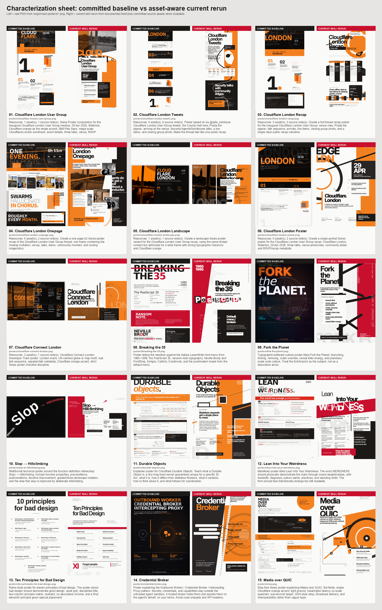

Characterization sheet: committed baseline vs asset-aware current rerun
Left = real PNG from origin/main:posters/*.png. Right = current skill rerun from a documented brief plus committed source assets/tweet text when available. This sheet intentionally rejects any baseline that is not present on main.
